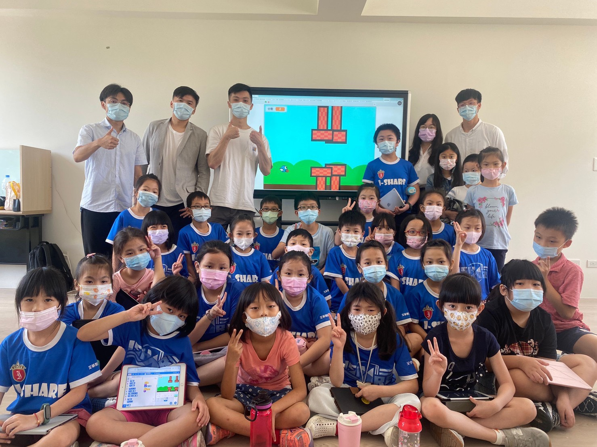
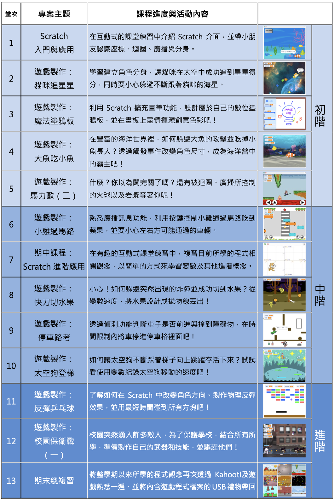
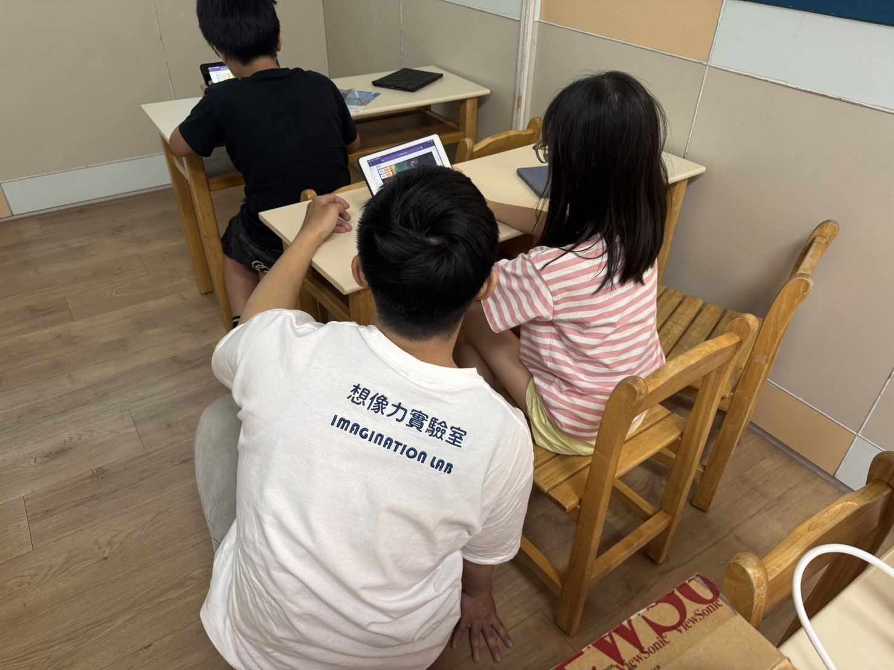

最新消息
迎戰 AI 大時代！科技不再只是工具，而是實現想像的超能力
在《AI素養 X Scratch遊戲工程營》中，我們將帶領孩子認識 AI 的運作邏輯，建立正確的科技倫理與「駕馭科技」的核心素養。我們引導孩子掌握與 AI 溝通的方法，讓 AI 成為最強大的創作助手。
工作室簡介
在科技迅速發展的時代，孩子需要的已不侷限於知識，更要具備創造能力與解決問題的思維能力。
想像力實驗室專注於國小階段的兒童程式設計教育，結合多年的教學經驗與專業團隊，打造出一系列兼具趣味與挑戰的課程，讓孩子在快樂中學習，在實作中成長。以 Scratch 遊戲開發 與 Micro:bit 軟硬體實作為核心，從遊戲設計、動畫互動到軟硬體整合應用，讓孩子透過動手做、動腦想，在實作中自然建立邏輯思維與創意思考能力。
工作室經歷
111學年度 - 想像力實驗室成立。
112學年度 - 受數間學校邀請合作開立課程、暑期資訊課輔。
113學年度 - 於約50間學校教導孩子創意實踐與程式語言。
114學年度 - 精心設計近百款課程專案，保持孩子的學習熱情，小孩積極主動聽課，也讓家長放心。
工作室理念
我們深信，學習不能只是知識的堆疊，更應該是一次又一次的「做中學」歷程。透過每個專案、每次嘗試，孩子學會的不只是寫程式，更是如何觀察問題、分析流程、提出解法並勇於實踐。
在想像力實驗室，我們不只是教程式，更是透過程式教育，陪伴孩子從零開始，勇敢嘗試、並從錯誤中學習，逐步建立起自信與解決問題的能力。我們相信，每個孩子都擁有無限的想像力，而我們的理念，便是引導並鼓勵孩子在每個學習過程中勇於揮灑創意，讓每一次的創作都擁有獨一無二的色彩。

系列課程
Scratch小小遊戲設計師
以圖像化程式語言 Scratch 為基礎，引導孩子學習邏輯思維與基礎程式概念。從角色動畫、互動遊戲到專題製作，讓孩子在創作中培養運算思維與創造力，輕鬆進入程式世界，做出屬於自己的遊戲作品。
Micro:bit小小創客工程師
結合 Micro:bit 微型電腦板與感測器模組，孩子將實際操作硬體，學習程式控制與智慧應用。從簡單的燈光控制、距離偵測，到互動裝置設計，培養邏輯思考與動手能力。這不只是寫程式，更是進入未來科技世界的第一步！
課程內容
我們設計了超過百種主題豐富的專案課程，每學期皆規劃初階、中階、進階以及期中、期末總複習課程，讓孩子能隨著學習歷程，逐步深化對程式設計的理解與應用。
從基礎邏輯入門，到進階應用，每個階段皆以專案實作為核心，引導孩子在動手做中累積經驗、在挑戰中建立自信。無論是初學者還是已有基礎的學生，都能找到適合自己的學習節奏與發展方向。

課程進行方式



開課學校
臺北市
大安區 新生國小、建安國小、幸安國小、和平實驗國小
松山區 民族國小、民生國小、西松國小、敦化國小、三民國小
信義區 三興國小、雙永國小
中山區 中山國小、長春國小、懷生國小、大直國小、濱江國小
中正區 南門國小
士林區 社子國小、百齡國小
萬華區 東園國小、西園國小
大同區 日新國小、蓬萊國小、永樂國小、太平國小
文山區 景興國小、景美國小、武功國小、辛亥國小、萬興國小、政大實小
新北市
內湖區 潭美國小、新湖國小
永和區 永平國小、秀朗國小、網溪國小
中和區興南國小、積穗國小、中和國小
板橋區 新埔國小、文德國小、莒光國小
新店區 雙城國小、大豐國小、新店國小、中正國小
樹林區 桃子腳國小、武林國小
三重區 重陽國小、碧華國小、集美國小
土城區 樂利國小、清水國小
蘆洲區 蘆洲國小
新竹縣／市
新竹市 東門國小、三民國小、關埔國小、陽光國小
新竹縣 博愛國小、大同國小、新社國小
※以上為歷年及現行合作學校名單，將持續更新中。
聯絡我們
Email: imagelab365@gmail.com
Line: @888hvxnr